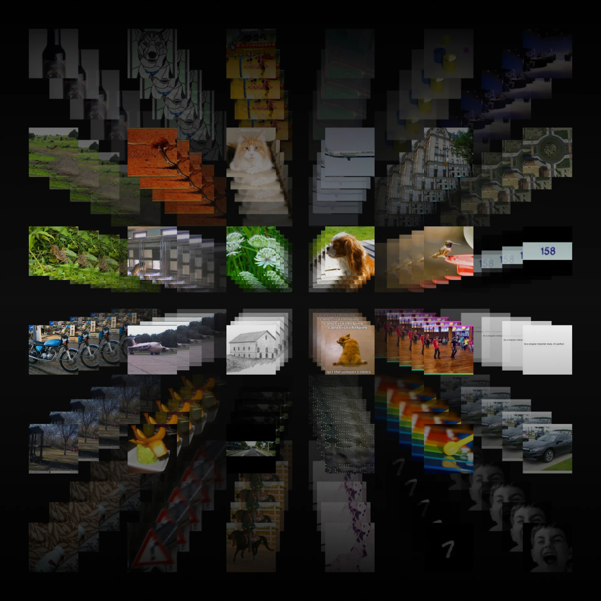
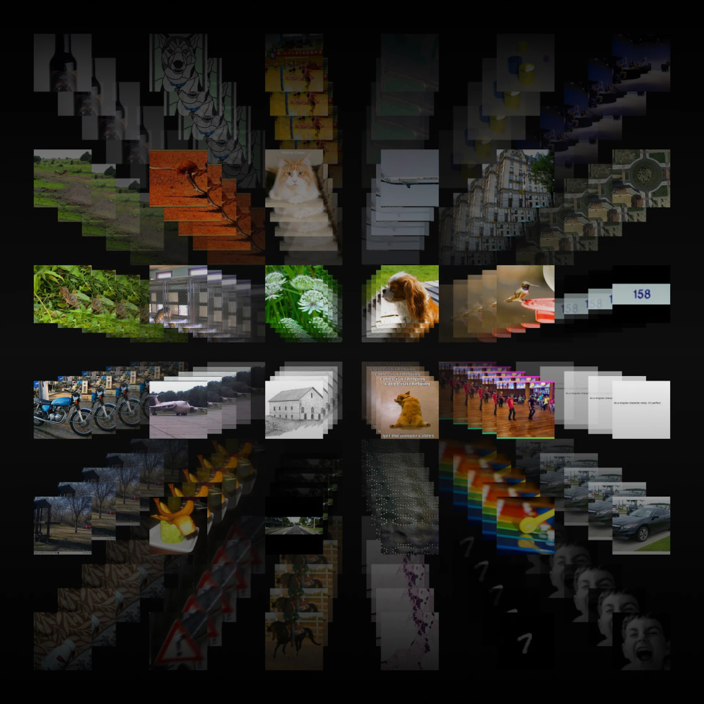

🌱 Full-Stack Image Integration w/ OpenAI CLIP Model - Atomic Hands Summer Internship
🟢 Full-Stack Developer (with PM Collaboration)Tech Stack Used:
Python React MongoDB OpenAI CLIP OpenVerse API Wikimedia BabelNet / WordNet 3.1 

As Full‑Stack Developer, I owned the semantic retrieval pipeline and validation tooling: ingest WordNet/BabelNet terms → fetch CC‑licensed candidates (OpenVerse, Wikimedia) → embed with OpenAI CLIP → score/diversify → store to MongoDB for review. I maintained GitLab CI/CD, authored reproducible READMEs, and paired with educators to align model output with classroom use.
Technical Demo
README.md Preview
Engineering Wins
- Coverage: Achieved 98% term coverage by combining lemma+POS, BabelNet mapping, and fallback strategies.
- Relevance: 85%+ educator‑rated relevance using CLIP similarity scoring + light diversity filtering.
- Automation: ~95% manual reduction via scripted retrieval, scoring, and batch exports for review.
- Data model: Consolidated candidates (source, license, score, strategy) in MongoDB for traceability.
- DevEx: GitLab CI pipelines (lint/test), environment templating, and Markdown runbooks.
Stack & Architecture
- Core: Python (pipeline, scoring), React (review UI), MongoDB (storage).
- Retrieval: OpenVerse + Wikimedia (CC‑licensed), optional ImageNet for nouns.
- NLP/CV: WordNet 3.1, BabelNet mapping, OpenAI CLIP embeddings for image/text similarity.
- Infra: env‑based configuration, reproducible local runs.
Developer Notes
- Idempotent runs: skip re‑processing unless
--forceis passed. - Licensing: capture license/source metadata; prefer CC‑BY/CC‑BY‑SA; log rejects.
- Validation loop: export top‑k with thumbnails for educator review; store decisions for retraining.
- Error handling: rate‑limit backoffs, partial retries, and defensive JSON parsing.
Product Management Collaboration
PM Touch: Worked closely with ASL educators and curriculum leads to define improved MVP scope, prioritize clarity and coverage, and ensure technical decisions mapped to real classroom needs. Led short feedback cycles and wrote onboarding docs for future contributors.

Impact: Enabled educators to find relevant, high-quality images for over 300+ ASL terms, enhancing lesson plans and student engagement. The project laid groundwork for future AI‑assisted content curation in educational settings.
Reflection
The hardest part was aligning “model‑good” with “teacher‑useful.” Here, I experienced first-hand integration across several open repos, APIs, and ultimately utilize LLMs of Pre-Trained Computer Vision to match the criteria we have.. Tight review loops and explicit rubrics closed that gap.
← Back to all projects